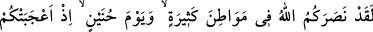
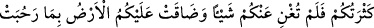
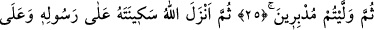
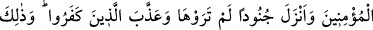
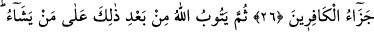
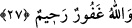
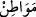
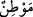

HUNEYN GAZVESİ
25. Andolsun Allah size bir çok yerde (savaş meydanlarında) ve Huneyn gününde
de yardım etmişti. Hani (o gün) çokluğunuz sizi böbürlendirmiş, fakat size hiçbir
yarar da sağlamamıştı. Bütün genişliğine rağmen yeryüzü size dar gelmişti.
Nihayet (bozularak) gerisin geri dönmüştünüz.
26. Sonra Allah, Rasûlü’nün ve müminlerin üzerine sekînetini (güven veren
rahmetini) indirdi, sizin görmediğiniz askerler indirdi ve kâfirlere azâb etti (onları
bozguna uğrattı). İşte kâfirlerin cezası budur!
27. Sonra Allah, bunun ardından yine dilediğinin tevbesini kabul eder. Allah
bağışlayandır, esirgeyendir.
“Andolsun Allah size bir çok yerde” savaş meydanlarında “ve Huneyn gününde de
yardım etmişti.” Yâni ey Muhammed’in ashâbı, Allah’a yemin olsun ki O düşmanınıza
karşı size yardım etmiş; zayıflığınıza, sayı ve techizat yönünden az olmanıza rağmen sizi
onlara üstün kılmıştı.
Âyette geçen “birçok yerde” ifadesi, “birçok savaş yerlerinde, alanlarında”
mânâsınadır. “” (yerler) kelimesi, insanın her hangi bir iş için kaldığı, ikamet
ettiği yer mânâsına gelen “” kelimesinin çoğuludur. Buradaki “Bir çok yer”den
maksat, Bedir, Hendek, Kurayza, Nadîr, Hudeybiye, Hayber ve Mekke’nin fethi
vak’alarıdır.
“Huneyn günü” ifadesinde “yevm” (gün) kelimesi, savaş o gün orada meydana
geldiği için “Huneyn” kelimesine izafe edilmiştir. “Huneyn günü”nden maksad Huneyn
Gazvesi’dir. Bu gazveye “Hevâzin Gazvesi” de denir. Ayrıca savaşın son bölümü Evtâs
denilen yerde geçtiği için bu savaşa “Evtâs Gazvesi” adı da verilmektedir. Huneyn,
Mekke ile Tâif arasında bir vâdidir.
“Hani” o gün “çokluğunuz sizi böbürlendirmiş…” Yani sayınızın çokluğu ve
techizatınızın bolluğu sizi sevindirmişti.